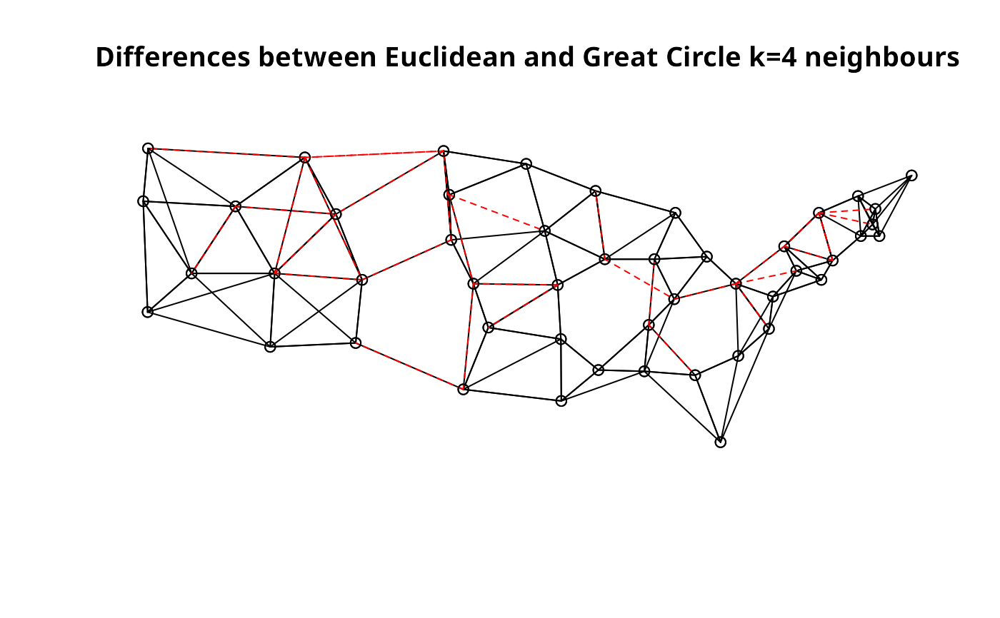

K nearest neighbours for spatial weights
knearneigh.RdThe function returns a matrix with the indices of points belonging to the set of the k nearest neighbours of each other. If longlat = TRUE, Great Circle distances are used. A warning will be given if identical points are found.
knearneigh(x, k=1, longlat = NULL, use_kd_tree=TRUE)
Arguments
| x | matrix of point coordinates, an object inheriting from SpatialPoints or an |
|---|---|
| k | number of nearest neighbours to be returned |
| longlat | TRUE if point coordinates are longitude-latitude decimal degrees, in which case distances are measured in kilometers; if x is a SpatialPoints object, the value is taken from the object itself; longlat will override |
| use_kd_tree | logical value, if the dbscan package is available, use for finding k nearest neighbours when longlat is FALSE, and when there are no identical points; from https://github.com/r-spatial/spdep/issues/38, the input data may have more than two columns if dbscan is used |
Details
The underlying legacy C code is based on the knn function in the class package.
Value
A list of class knn
integer matrix of region number ids
number of input points
input required k
number of columns of x
input coordinates
Author
Roger Bivand Roger.Bivand@nhh.no
See also
knn, dnearneigh,
knn2nb, kNN
Examples
columbus <- st_read(system.file("shapes/columbus.shp", package="spData")[1], quiet=TRUE) coords <- st_centroid(st_geometry(columbus), of_largest_polygon=TRUE) col.knn <- knearneigh(coords, k=4) plot(st_geometry(columbus), border="grey")data(state) us48.fipsno <- read.geoda(system.file("etc/weights/us48.txt", package="spdep")[1]) if (as.numeric(paste(version$major, version$minor, sep="")) < 19) { m50.48 <- match(us48.fipsno$"State.name", state.name) } else { m50.48 <- match(us48.fipsno$"State_name", state.name) } xy <- as.matrix(as.data.frame(state.center))[m50.48,] llk4.nb <- knn2nb(knearneigh(xy, k=4, longlat=FALSE)) gck4.nb <- knn2nb(knearneigh(xy, k=4, longlat=TRUE)) plot(llk4.nb, xy)#> Neighbour list object: #> Number of regions: 48 #> Number of nonzero links: 192 #> Percentage nonzero weights: 8.333333 #> Average number of links: 4 #> Non-symmetric neighbours list #> Link number distribution: #> #> 4 #> 48 #> 48 least connected regions: #> 1 2 3 4 5 6 7 8 9 10 11 12 13 14 15 16 17 18 19 20 21 22 23 24 25 26 27 28 29 30 31 32 33 34 35 36 37 38 39 40 41 42 43 44 45 46 47 48 with 4 links #> 48 most connected regions: #> 1 2 3 4 5 6 7 8 9 10 11 12 13 14 15 16 17 18 19 20 21 22 23 24 25 26 27 28 29 30 31 32 33 34 35 36 37 38 39 40 41 42 43 44 45 46 47 48 with 4 links #> Summary of link distances: #> Min. 1st Qu. Median Mean 3rd Qu. Max. #> 93.66 297.56 393.72 414.78 513.25 956.71 #> #> The decimal point is 2 digit(s) to the right of the | #> #> 0 | 99 #> 1 | 00112233666699 #> 2 | 002222223344444444446677889999 #> 3 | 00000111112222222233333333334444556666777788899999 #> 4 | 0000001111233555555666666677788888899 #> 5 | 001111111112222222234444455666679 #> 6 | 002335667 #> 7 | 0112345889 #> 8 | 02279 #> 9 | 56 #>#> Neighbour list object: #> Number of regions: 48 #> Number of nonzero links: 192 #> Percentage nonzero weights: 8.333333 #> Average number of links: 4 #> Non-symmetric neighbours list #> Link number distribution: #> #> 4 #> 48 #> 48 least connected regions: #> 1 2 3 4 5 6 7 8 9 10 11 12 13 14 15 16 17 18 19 20 21 22 23 24 25 26 27 28 29 30 31 32 33 34 35 36 37 38 39 40 41 42 43 44 45 46 47 48 with 4 links #> 48 most connected regions: #> 1 2 3 4 5 6 7 8 9 10 11 12 13 14 15 16 17 18 19 20 21 22 23 24 25 26 27 28 29 30 31 32 33 34 35 36 37 38 39 40 41 42 43 44 45 46 47 48 with 4 links #> Summary of link distances: #> Min. 1st Qu. Median Mean 3rd Qu. Max. #> 93.66 297.09 393.72 410.42 508.50 953.23 #> #> The decimal point is 2 digit(s) to the right of the | #> #> 0 | 99 #> 1 | 00112233666699 #> 2 | 0022222233444444444466778899999 #> 3 | 0000001111122222222333333333344445566677778888999 #> 4 | 00000011112335555556666666777788888899 #> 5 | 0001111111112222222344444456667899 #> 6 | 0023356 #> 7 | 000112455899 #> 8 | 0229 #> 9 | 5 #>xy1 <- SpatialPoints((as.data.frame(state.center))[m50.48,], proj4string=CRS("+proj=longlat +ellps=GRS80")) gck4a.nb <- knn2nb(knearneigh(xy1, k=4)) summary(gck4a.nb, xy1, scale=0.5)#> Neighbour list object: #> Number of regions: 48 #> Number of nonzero links: 192 #> Percentage nonzero weights: 8.333333 #> Average number of links: 4 #> Non-symmetric neighbours list #> Link number distribution: #> #> 4 #> 48 #> 48 least connected regions: #> 1 2 3 4 5 6 7 8 9 10 11 12 13 14 15 16 17 18 19 20 21 22 23 24 25 26 27 28 29 30 31 32 33 34 35 36 37 38 39 40 41 42 43 44 45 46 47 48 with 4 links #> 48 most connected regions: #> 1 2 3 4 5 6 7 8 9 10 11 12 13 14 15 16 17 18 19 20 21 22 23 24 25 26 27 28 29 30 31 32 33 34 35 36 37 38 39 40 41 42 43 44 45 46 47 48 with 4 links #> Summary of link distances: #> Min. 1st Qu. Median Mean 3rd Qu. Max. #> 93.66 297.09 393.72 410.42 508.50 953.23 #> #> The decimal point is 2 digit(s) to the right of the | #> #> 0 | 99 #> 1 | 00112233666699 #> 2 | 0022222233444444444466778899999 #> 3 | 0000001111122222222333333333344445566677778888999 #> 4 | 00000011112335555556666666777788888899 #> 5 | 0001111111112222222344444456667899 #> 6 | 0023356 #> 7 | 000112455899 #> 8 | 0229 #> 9 | 5 #>xy1 <- st_as_sf((as.data.frame(state.center))[m50.48,], coords=1:2, crs=st_crs("+proj=longlat +ellps=GRS80")) old_use_s2 <- sf_use_s2() sf_use_s2(TRUE) system.time(gck4a.nb <- knn2nb(knearneigh(xy1, k=4)))#> user system elapsed #> 0.011 0.001 0.012#> Neighbour list object: #> Number of regions: 48 #> Number of nonzero links: 192 #> Percentage nonzero weights: 8.333333 #> Average number of links: 4 #> Non-symmetric neighbours list #> Link number distribution: #> #> 4 #> 48 #> 48 least connected regions: #> 1 2 3 4 5 6 7 8 9 10 11 12 13 14 15 16 17 18 19 20 21 22 23 24 25 26 27 28 29 30 31 32 33 34 35 36 37 38 39 40 41 42 43 44 45 46 47 48 with 4 links #> 48 most connected regions: #> 1 2 3 4 5 6 7 8 9 10 11 12 13 14 15 16 17 18 19 20 21 22 23 24 25 26 27 28 29 30 31 32 33 34 35 36 37 38 39 40 41 42 43 44 45 46 47 48 with 4 links#> Warning: number of items to replace is not a multiple of replacement length#> Summary of link distances: #> Min. 1st Qu. Median Mean 3rd Qu. Max. #> 102.5 296.6 409.3 421.1 527.8 820.3 #> #> The decimal point is 2 digit(s) to the right of the | #> #> 0 | 01166 #> 2 | 24889900012223488 #> 4 | 00235661111122467888 #> 6 | 21248 #> 8 | 2 #>sf_use_s2(FALSE)#> Spherical geometry (s2) switched off#> user system elapsed #> 0.009 0.000 0.009#> Neighbour list object: #> Number of regions: 48 #> Number of nonzero links: 192 #> Percentage nonzero weights: 8.333333 #> Average number of links: 4 #> Non-symmetric neighbours list #> Link number distribution: #> #> 4 #> 48 #> 48 least connected regions: #> 1 2 3 4 5 6 7 8 9 10 11 12 13 14 15 16 17 18 19 20 21 22 23 24 25 26 27 28 29 30 31 32 33 34 35 36 37 38 39 40 41 42 43 44 45 46 47 48 with 4 links #> 48 most connected regions: #> 1 2 3 4 5 6 7 8 9 10 11 12 13 14 15 16 17 18 19 20 21 22 23 24 25 26 27 28 29 30 31 32 33 34 35 36 37 38 39 40 41 42 43 44 45 46 47 48 with 4 links #> Summary of link distances: #> Min. 1st Qu. Median Mean 3rd Qu. Max. #> 93.66 297.09 393.72 410.42 508.50 953.23 #> #> The decimal point is 2 digit(s) to the right of the | #> #> 0 | 99 #> 1 | 00112233666699 #> 2 | 0022222233444444444466778899999 #> 3 | 0000001111122222222333333333344445566677778888999 #> 4 | 00000011112335555556666666777788888899 #> 5 | 0001111111112222222344444456667899 #> 6 | 0023356 #> 7 | 000112455899 #> 8 | 0229 #> 9 | 5 #>sf_use_s2(old_use_s2)#> Spherical geometry (s2) switched on# https://github.com/r-spatial/spdep/issues/38 if (require("dbscan", quietly=TRUE)) { set.seed(1) x <- cbind(runif(50), runif(50), runif(50)) out <- knearneigh(x, k=5) knn2nb(out) try(out <- knearneigh(rbind(x, x[1:10,]), k=5)) }#> Warning: knearneigh: identical points found#> Warning: knearneigh: kd_tree not available for identical points#> Error in knearneigh(rbind(x, x[1:10, ]), k = 5) : #> kd_tree required for more than 2 dimensions